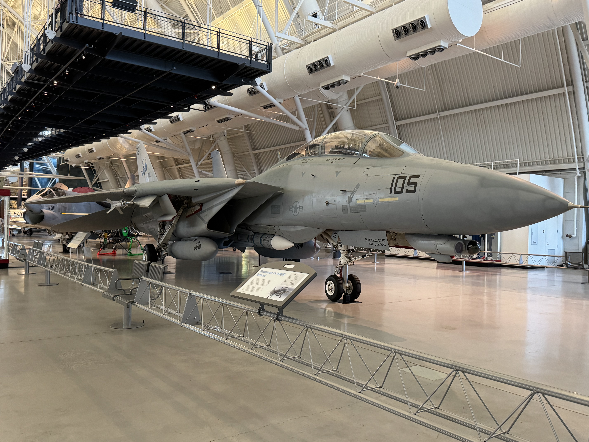
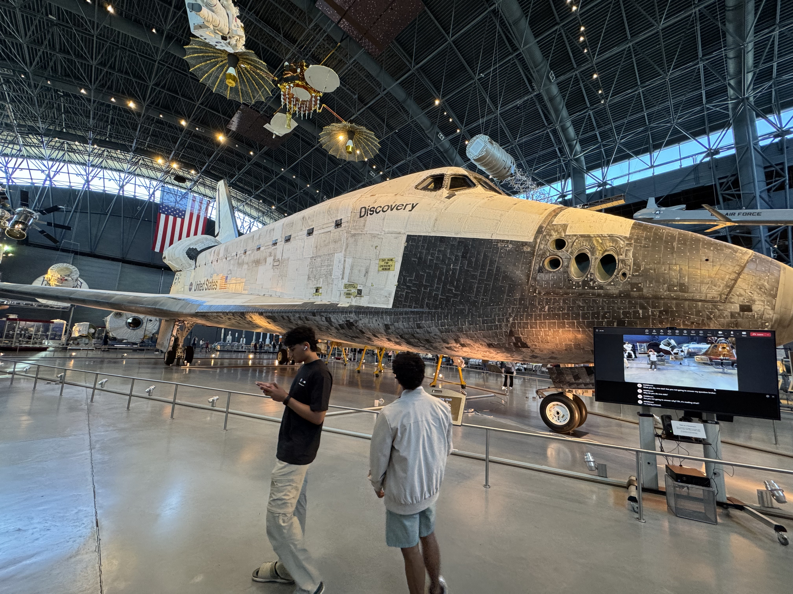
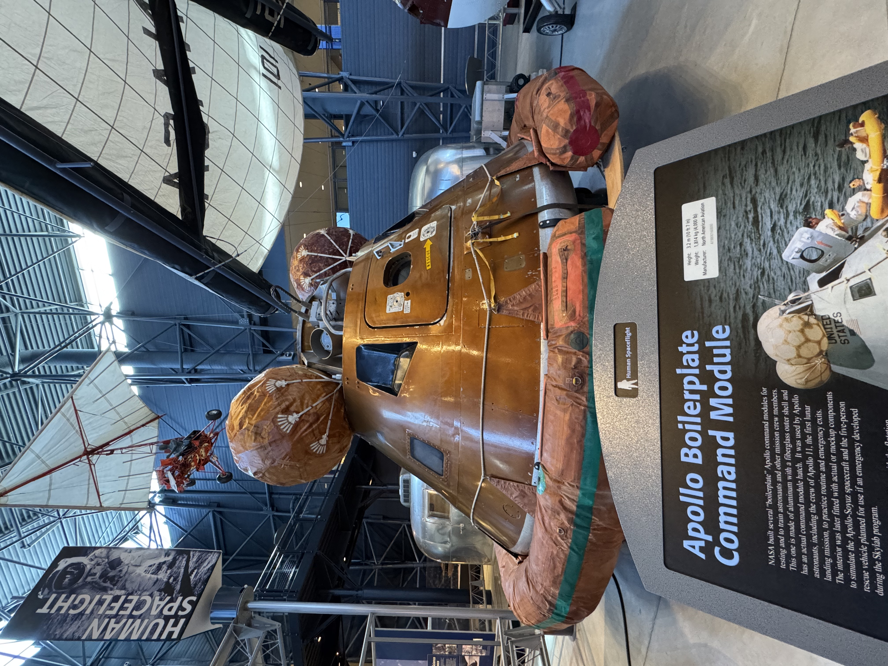
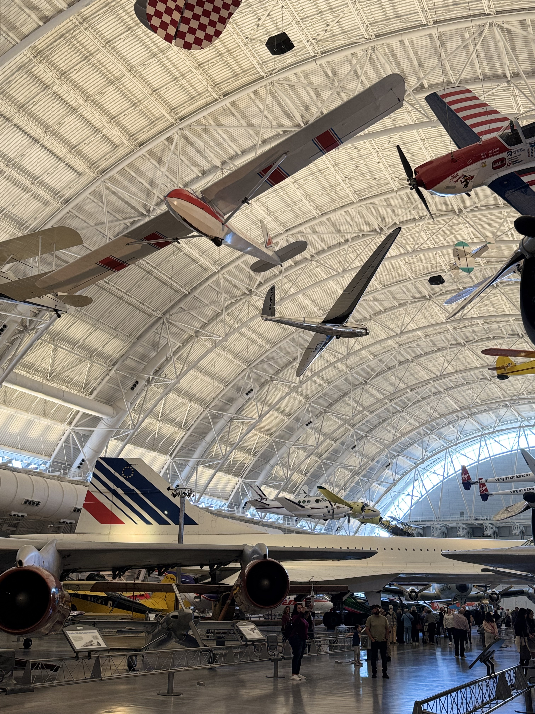

Space Hazy Tour:
A Visual Journey Through Aviation History
By Vick Maturu
The first time I stepped into the Steven F. Udvar-Hazy Center in Chantilly, Virginia, I felt like I had just walked into a spaceship hangar from a sci-fi movie. Towering above me was the SR-71 Blackbird, cloaked in matte black, as if guarding the secrets of Cold War skies. That’s the moment you realize this isn’t just another museum visit—it’s a launchpad into aviation history.
This journal is part of Thrust & Theory and captures a visual and emotional tour through aviation and aerospace history. It’s divided into three chapters—Stealth & Speed, Space & Ambition, and Wings of the Past—each pairing photography with narrative reflections. Come along for a walk through air and space like you’ve never experienced before.
Stealth & Speed
SR-71 Blackbird

SR-71 Blackbird on display at the main entrance. Image taken by: Vick Maturu
As we begin our tour, the first thing to catch your breath is the SR-71 Blackbird. This isn't just a plane—it's a legend. Coated in heat-resistant black paint and forged to slip through the skies at over Mach 3, the Blackbird holds the record for the fastest air-breathing manned aircraft. Standing under its long, menacing nose feels like meeting a ghost from the Cold War. I stood in awe, silent, imagining it slicing through the upper atmosphere 85,000 feet above ground. But the tour must go on.
F-14 Tomcat
F-14 Tomcat in pristine form. Image taken by: Vick Maturu
Just a few steps to the right sits the F-14 Tomcat. You might recognize it from *Top Gun*, but this was no movie prop. The swing-wing design allowed it to sweep its wings back at high speeds and extend them at low speeds for stability. It was a workhorse of the U.S. Navy and saw action in conflicts from Iran to Iraq. Getting this close, you understand the engineering brilliance packed into every inch.
German Rocket Jet

A relic from WWII, representing early rocket propulsion. Image taken by: Vick Maturu
We now cross into darker territory—one of the earliest rocket-powered fighter jets designed by Nazi Germany. With a short burn time and incredible acceleration, it was a desperate attempt to dominate air battles in the final stages of WWII. It’s rusted, aged, and scarred by time, but powerful nonetheless. Standing here is like looking at the roots of modern rocket science.
Space & Ambition
Space Shuttle Discovery
The retired shuttle Discovery under museum lighting. Image taken by: Vick Maturu
Next up: the crown jewel. Space Shuttle Discovery. Towering above you with its cargo bay doors closed and thermal tiles still weathered from re-entry, it commands reverence. This shuttle flew 39 missions—more than any other. It carried satellites, astronauts, and hope. I noticed a group of school kids just staring, and I remembered doing the same thing when I first saw Discovery in a documentary. Now here I was—next to history itself.
Apollo Command Module
Boilerplate Apollo Command Module on exhibit. Image taken by: Vick Maturu
Resting nearby is a boilerplate Apollo module—used for training, not flight. Still, it carries the same geometry and weight of real capsules that went to the Moon. Its minimalism shocked me. The cramped space, thin shielding, and analog controls make you appreciate the guts it took to strap in and launch toward the void.
Concorde
British Airways Concorde, nose down for landing configuration. Image taken by: Vick Maturu
Down the main aisle rests a commercial icon—the Concorde. This jet once cruised at Mach 2, cutting flight times from New York to London in half. It’s long, slim, and styled like a dart. The nose droops for better cockpit visibility during takeoff and landing. As I stood beneath it, I couldn’t help but imagine sipping champagne at 60,000 feet in the 1980s.
Wings of the Past
WWII Bomber & Fighters

WWII aircraft collection featuring the B-29. Image taken by: Vick Maturu
This area hits different. The silver B-29 Superfortress looms large, especially knowing it's the same type that dropped the atomic bomb. Around it are fighter planes from every corner of WWII—each with its own grit. Their weathered bodies and patched panels speak volumes. Here, technology met desperation, and the skies were unforgiving.
Propeller Aircraft

World War II fighter planes preserved with authenticity. Image taken by: Vick Maturu
The Corsair, with its inverted gull wings, grabs attention. A naval powerhouse, it was designed to take off and land on carriers. These propeller planes tell the story of human endurance—before jets, before stealth, before computers—just you, the machine, and the wind.
Seaplanes

Seaplanes hover overhead in flight formation. Image taken by: Vick Maturu
Look up, and you’ll spot the seaplanes—suspended mid-air. Used in reconnaissance, rescue, and supply missions, these birds were vital. There’s something serene about seeing them "fly" above you, frozen in time yet ready to dive into the Pacific once more.
As our tour ends, I think back to that first moment—standing beneath the Blackbird. From Cold War paranoia to Moon landings to supersonic travel, this museum doesn’t just showcase machines. It tells stories. It lets you walk through decades of flight dreams made real.
So what do you take away? That humans are dreamers, tinkerers, and explorers. And that every generation has its sky to conquer. This may be the end of our walk, but it's far from the end of your flight. There’s always another mission, another museum, another horizon. Until next time, keep your eyes on the skies.